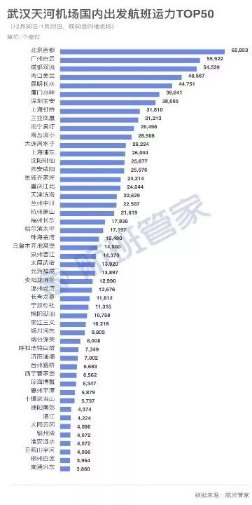
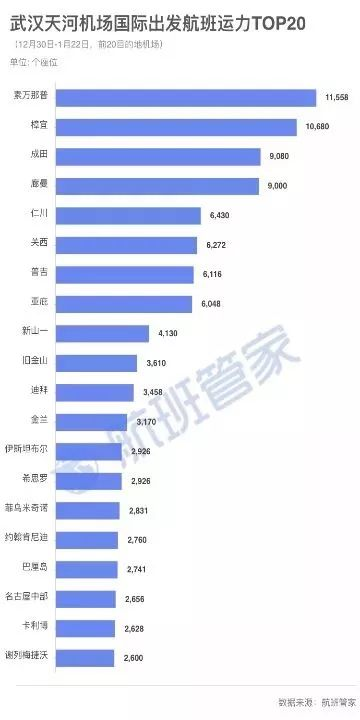

武汉“封城”战疫情：民航铁路高速等出城通道相继关闭
原文链接 备份链接 关闭高速公路已是迫在眉睫，此前有因为自驾出游导致疑似感染的病例。截至1月23日下午14时，出武汉市的高速公路开始封闭 湖北省武汉市洪山区武鄂高速公路龚家岭收费站，已经堵车一个半小时 文 |《财经》记者 陈亮 李皙寅 王 …

1月26日晚，湖北省人民政府新闻办公室就新型冠状病毒感染的肺炎疫情防控工作召开新闻发布会，武汉市长周先旺表示，因为春节和疫情的影响，目前有500多万人离开武汉，还有900万人留在城里。
这500万人去了哪里？
1月23日，武汉、鄂州、黄冈三座湖北城市相继采取“封城”措施，赤壁和仙桃市内公共交通停运。
从当天早上10点起，武汉全市城市公交、地铁、轮渡、长途客运暂停运营，机场、火车站离汉通道暂时关闭。11点20分起，鄂州全市铁路车站通道暂时关闭。17点起，仙桃市内公交、渡轮、农村客运车全部停运，娱乐及室内运动场所关闭。24点起，离开黄冈市区的城铁站、火车站通道暂时关闭，市区内的公交、长途客运暂停运营；黄冈市区内的电影院、网吧等室内文化娱乐场馆也都暂停营业。赤壁城市公交、农村客运、省县级客运暂停运营。
武汉作为中国铁路客运网络中的重要枢纽城市，拥有南北大动脉京广高铁和东西向沪汉蓉沿江铁路。根据第一财经·新一线城市研究所的数据，2019年武汉高铁可直达城市达到152个，排名仅次于北京、上海、郑州、南京。武汉在民航网络中的枢纽地位虽然不比高铁，但武汉天河机场2018年的旅客吞吐量也达到了2450万人次，是全国排名第16的千万级机场。

百度地图慧眼的迁徙大数据显示，1月10日至1月22日春运期间，每天从武汉出发的人群中有6至7成的人前往了湖北省内的其他城市，其次是河南省、湖南省、安徽省、重庆市、江西省。从城市维度来看，除了湖北的城市，从武汉前往信阳、重庆、长沙、北京、上海、郑州的人群比例也较高。

在湖北省内，孝感和黄冈是接受武汉返乡客流比例最高的两个城市，平均每天有13.03%和12.64%的人从武汉出城到达孝感和黄冈。而根据湖北卫健委公布的疫情通报数据，截至2020年1月27日上午8点，武汉确诊的新型冠状病毒感染的肺炎病例共计698例，黄冈154例，孝感100例，荆门90例，咸宁63例，随州52例，荆州47例，十堰40例，黄石36例，襄阳36例，宜昌31例，恩施州25例，鄂州20例，天门13例，仙桃12例，潜江5例。

从过去一段时间的武汉出港航班数据，也可以对500万人去哪里有更多的了解。
根据航班管家统计的12.30-1.22日武汉航班国内出发、国际出发、港澳台出发的运力数据，北京，广州，成都，海口，昆明，厦门，深圳，上海，三亚，南宁是武汉出港航班前10大城市。

港澳台方面，武汉出港航班量最大的是香港，其次是澳门和台湾。

国际方面，武汉出港航班量最大的是泰国曼谷，出港量排名第二的是新加坡，排名第三的是日本东京。

全国各城市新型肺炎疫情统计Excel
新一线城市研究所×8点健闻

文/项维肖 毛怡玫 蒋雨暄 唐亿 视觉/王方宏


原文链接 备份链接 关闭高速公路已是迫在眉睫，此前有因为自驾出游导致疑似感染的病例。截至1月23日下午14时，出武汉市的高速公路开始封闭 湖北省武汉市洪山区武鄂高速公路龚家岭收费站，已经堵车一个半小时 文 |《财经》记者 陈亮 李皙寅 王 …
原文链接 备份链接 几位口罩行业的从业者，都是在大量微信、电话疯狂轰炸的间歇，接受我们采访的。所有人的语速都异常急促——在过去的一周时间内，他们接过工信部、各地应急办、市级政府的电话；也接过各省医院、药店、大小代理商的电话；还有从未打过交 …
原文链接 备份链接 1⁄10 2020年1月25日，农历大年初一 来信：@徐大夫 坐标：武汉某心内科重症监护室 我们科室新年第一天上班的合照。 大家一起努力！ 2⁄10 2020年1月25日 来信：@双十一张友文 …
原文链接 备份链接 摘要：1月26日晚间，杭州官方发布“新型冠状病毒肺炎”最新通报，25日9时至24时，杭州市新增新型冠状病毒感染的肺炎确诊病例15例，其中2名确诊患者正是乘坐TR188次航班抵达杭州萧山机场的乘客。 文 | 殷盛琳 程静 …
原文链接 备份链接 难以确诊的病人：排10小时才能打上针丨武汉肺炎亲历 2020-01-25 21:10 作者：王迎春 来源：中国经营网 本报记者 王迎春 武汉报道 在自己已经走过的生命中，张林（化名）从来没有像现在这样，期望从医院那里， …